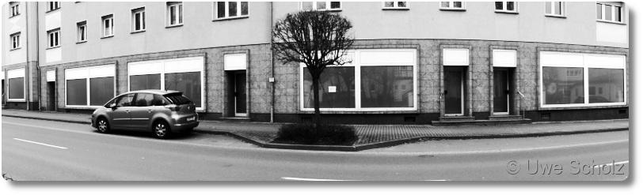
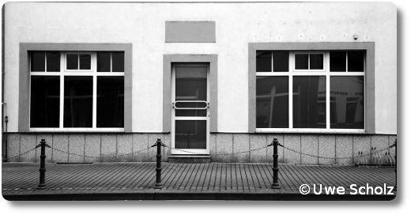
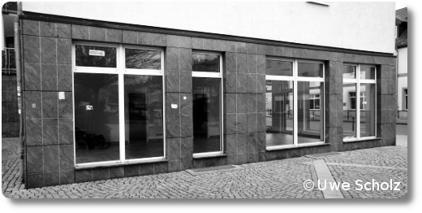
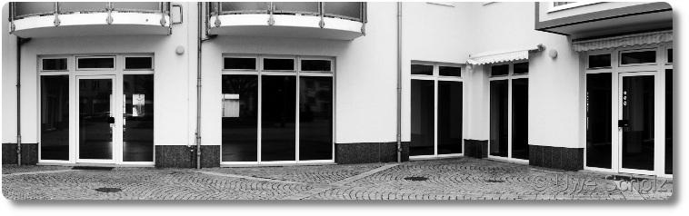

Existenznöte
Vor wenigen Wochen ist, vielleicht etwas unbemerkt, die Nachricht durch die Medien gewandert, dass …
…bis zu 50.000 Läden in deutschen Innenstädten angesichts des Online-Handel-Booms in ernsthaften Existenznöten…
seien. So sah es der Deutsche Städte- und Gemeindebund, der gleichzeitig vor einer Verödung der Innenstädte warnte. Leere Schaufenster in den Innenstädten würden zu einer Abwärtsspirale führen, und die Stadtzentren verlören so an Attraktivität. Ich glaube ja, dass das Problem eigentlich woanders liegt. Deswegen hole ich etwas weiter aus…

Aufgewachsen bin ich auf einem Dorf und es war daher für mich immer etwas besonderes, wenn es mit den Eltern in die nächste Kleinstadt zum Einkaufen ging. In fast jeder Straße gab es das ein oder andere kleine Geschäft, und irgendwo konnte irgendwie jeder meiner Wünsche erfüllt werden. Und dann wurde außerhalb der Stadt ein riesiger Tempel eröffnet: Ein „Kaufland“ und direkt daneben ein Baumarkt.
In Ostdeutschland muss die Zeit nach der Wende für solche Märkte eine wahre Goldgrube gewesen sein. Zwar hatten bald nach dem Mauerfall auch viele Läden in der Innenstadt ihr Warenangebot auf die neue bunte Welt umgestellt. Aber dieser eine Tempel außerhalb meiner Heimatstadt hatte einige Asse im Ärmel, mit denen kein anderer Laden mithalten konnte:
Es gab eine riesige Verkaufsfläche, in der man sich verlaufen konnte.
Man bekam einfach alles, was das Herz begehrte, in einem einzigen Einkauf.
Endlich konnte man sich soviel man wollten selber aus dem Regal nehmen. Ohne von einem Verkäufer beäugt zu werden.
Und am allerwichtigsten: es gab einen gigantischen Parkplatz. FÜR ALLE!
Abgesehen davon, dass man dort zu Fuß oder mit dem Fahrrad nur schwerlich hinkam, konzentriert sich nun seit vielen Jahren das bürgerliche Wochenend-Treiben um diesen Tempel. Für Besitzer eines motorisierten Unterbaus ist dieses abgelegene Einkaufsviertel immer eine Spritztour wert. Deswegen haben sich dort alsbald noch viele andere Geschäfte angesiedelt: Tankstellen, Auto-Werkstätten, Autohäuser, eine Bowlingbahn mit Kneipe, Geschäfte für Immobilien, etc. pp. Direkt neben Kaufland gibt es außerdem noch einen Technik-Markt und zwei Bekleidungsgeschäfte.

Diese Entwicklung hat ihre Spuren hinterlassen und mit der Zeit mussten die ersten Händler in der Innenstadt aufgeben. Alteingesessene Tante Emma Läden waren als erste dran, dann Zeitschriften-Geschäfte, verschiedene Klamotten-Läden, aber auch Restaurants und Lokale. Erst kürzlich musste die einzige Buchhandlung weit und breit schließen (die aber später von zwei tollen ehemaligen Mitarbeiterinnen wieder eröffnet wurde). Der Zerfall geschah nicht nur in der Innenstadt, sondern auch in den kleinen umliegenden Städten und Gemeinden. Und er hält bis heute an [*]. In verschiedenen Stadtteilen öffneten außerdem verschiedene Discounter, nachdem alte „Kaufhallen“ geschlossen wurden, in denen es bisher ausschließlich Nahrungsmittel und Drogerieartikel zu kaufen gab.
Auch in Langen, der Stadt, in der wir heute wohnen, gibt es mehrere Discounter. Bevor ich einen „Werbung-Stopp“-Schild auf unseren Briefkasten klebte, hatten wir auch noch regelmäßig deren Werbung im Briefkasten. Aber irgendwann merkte ich, dass wir eigentlich nur noch dabei waren, den Aktionswochen von Lidl, Aldi & Co hinterherzugeifern:
„Oh, schau mal, nächste Woche gibt’s Schreibutensilien für’s Büro. Brauchen wir!“
„Wandersachen und -Ausrüstung! Wir könnten doch demnächst endlich mal wieder Wandern gehen, brauchen wir da nicht auch dieses tolle Survival-Kit? Wow, kostet nur xx Euro! Gleich morgen hol ich’s uns.“
„Ah, endlich gibt’s wieder was für’s Fahrrad. Ich brauchte doch schon lange eine neue Luftpumpe/Flickzeug/Fahrradtasche…“
Und so ging es in einem fort. Immer und immer wieder, jede Woche auf’s Neue. Und da fragte ich mich irgendwann: Ist es wirklich nötig, nur dann bestimmte Dinge zu kaufen, wenn sie in der Discounter-Werbung stehen? Warum haben wir sie nicht in einem der vielen Läden besorgt, die genau diese Ware immer anbieten? Bei denen es Beratung, Fachwissen und eine viel größere Auswahl gibt. Hätte es nicht auch die Fitness-Matte, das Schreibset, die grüne Blumenvase, und, und ,und vom Schreibwarengeschäft oder vom Kaufhaus gegenüber getan?

Zugegeben, die Waren dort sind teurer als beim Discounter und sie werden im Zweifel auch nicht unter ökologischen oder sozialen Gesichtspunkten hergestellt. Aber die Gewinne, die in den kleinen Geschäften der Stadt gemacht werden, die bleiben hier! Zum Beispiel kümmert sich das Kaufhaus um die Ecke darum, dass die Fassade und die Straße drum herum gut aussieht und fußgängerfreundlich ist. Dort können sich Mitarbeiter verwirklichen und haben echte, fordernde Aufgaben, manchmal ein ganzes Arbeitsleben lang. Ganz zu schweigen davon, dass lokale Geschäfte sich als Sponsoren von hiesigen Vereinen hervortun und damit den sozialen Zusammenhalt in der Stadt stärken. Welcher Discounter kann damit schon für sich werben?

Zwar behauptet der Städte- und Gemeindebund, der neue Feind des stationären Handels seien Geschäfte im Internet, aber das sehe ich nicht so. Denn der wahre Feind sind die Discounter, die unschlagbar gut darin sind, Bedürfnisse zu erschaffen, indem sie nur für kurze Zeit bestimmte Haushaltswaren anbieten, die Gewinne abgreifen, ihre Angestellten zum Teil wie - Sklaven - behandeln und nicht viel zur Gesellschaft beitragen.
Heute scheint mir diese Entwicklung nur schwer aufhaltbar zu sein. Das macht mich traurig, weil die großen Ketten noch reicher und und noch mächtiger werden und damit die Preise bestimmen können. Und in der Konsequenz tatsächlich viele Innenstädte veröden. Der einzige Ausweg aus dieser Situation ist, dass sich Konsumenten endlich ihrer Macht im Geldbeutel bewusst werden. Aber statt dessen wird oft über die teuren kleinen Läden genörgelt (oft von denen, die es sich leisten könnten) und nicht daran gedacht, dass diese keine mächtige Einkaufsabteilung im Backoffice haben.